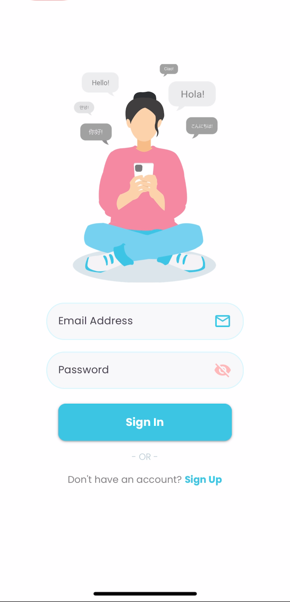
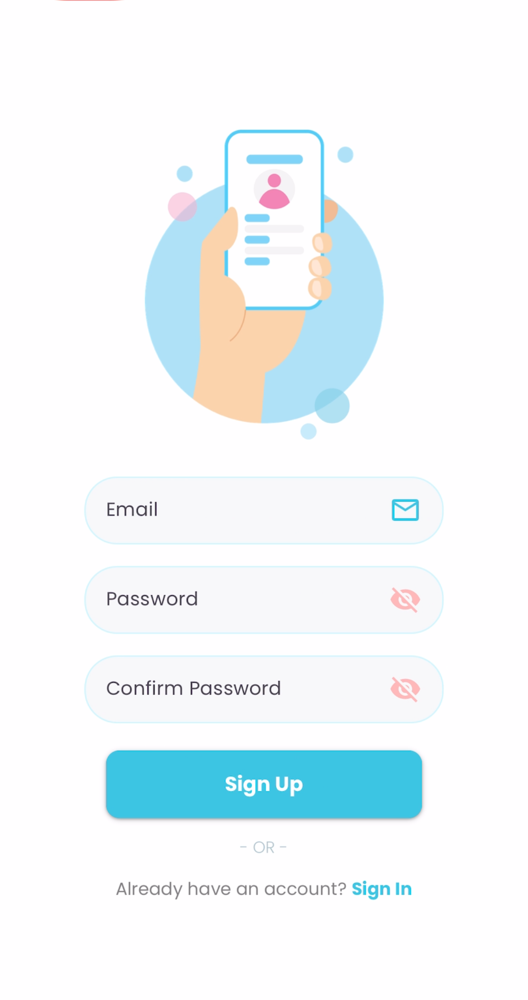
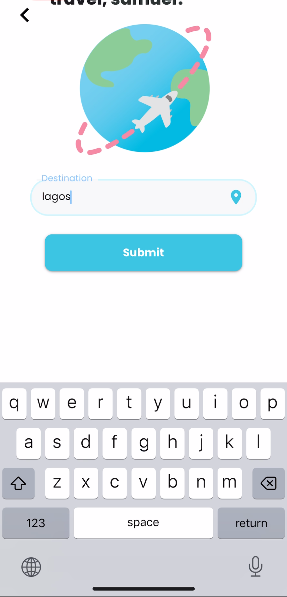
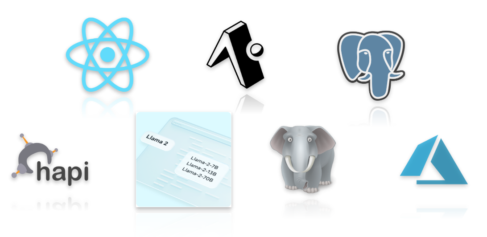

Overview
A Lucid In-Context Approach to Linguistic Activity
Inspirations
Lingucidity is a language-oriented utility application that emphasizes interactions over rote study. While language apps like Duolingo target long-term learners with a range of exercises too broad to apply to one’s immediate circumstances, Lingucidity, a portmanteau of “linguistic” and “lucidity,” better addresses the short-term needs of international travel.
  What it does
By providing lists of topically-organized, LLM-generated words and phrases in the target language adapted to the environmental, colloquial, and personal circumstances the user provides, Lingucidity allows users to better apply the language to their immediate needs as international travelers.
How we built it
To further facilitate such linguistic connections, Lingucidity also integrates the Wordreference dictionary into its translation output so users can gain insight into how individual words and phrases are conjugated and translated, which provides more opportunities for inter-linguistic engagement than traditional translators like Google Translate.
Tech Stack
- Artificial Intelligence
- React Native/Expo
- JavaScript
- Python
- CRUD
- REST API
- PostgreSQL
- Azure SaaS
- Usability Testing
- Agile/Kanban